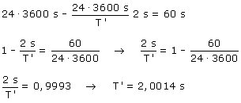
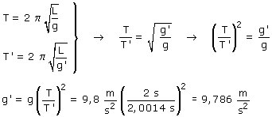

Sea T' el período del péndulo en este segundo
lugar. En un día (24·3600 s) el péndulo efectúa  Aplicamos la fórmula del péndulo en el primer lugar, T = 2 s, g = 9.8 m/s2, y en el segundo, donde T' = 2.0014 s y la gravedad es g' (Incógnita)  |